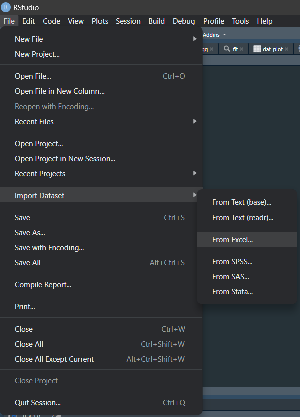
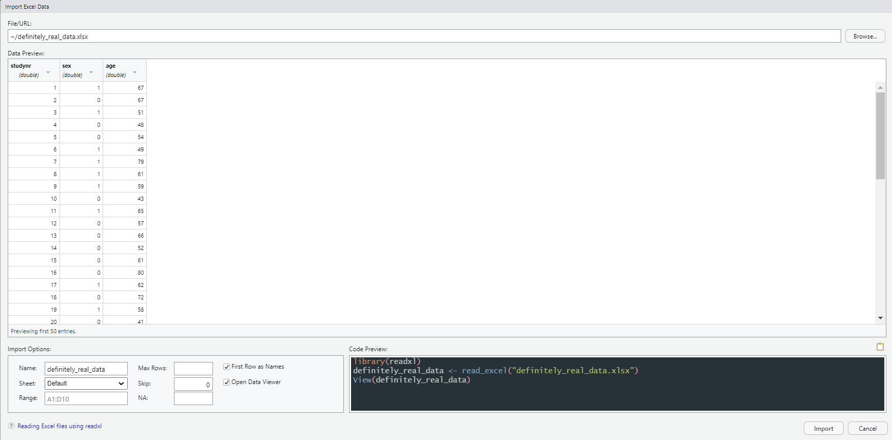

We have already seen how to create data from scratch, but it is more likely that your data is not created that way. Instead, most data is stored in electronic data capture systems. These systems can then return files which allow the data to be read into statistical programs. This data may come in multiple formats and here we will discuss how to read these different formats into your R Global Environment.
The basics
Working directionary
When we want to load into our Global Environment, by default R will look in a certain spot in our device: the working directionary. By default, the working directionary is the same spot where our R script is saved. The path to the working directionary can be found by using getwd(). If we want to specify a different workign directionary, for instance because our data is in a folder separate from our codes, we can use setwd(), specifying the path to the directionary.
File
All methods of reading data require an argument file (sometimes called path or data_file), which ?base::load() defines as a (readable binary-mode) connection or a character string giving the name of the file to load (when tilde expansion is done). This file is simply a path to the document we want to load in. For example: C:/users/username/documents/rtutorial/data/definitely_real_data.csv. Note that the file argument must always end in the file name (definitely_real_data) including extension (.csv).
Tilde expansion
Remembering where all your data is stored and writing it all out (C:/users/username/...) can cost quite some effort. Luckily, we have a concept called tilde expansion. When we set our working directionary with setwd(), we can stop specifying that part in the file argument and instead only specify a tilde (~). Instead of calling C:/users/username/documents/rtutorial, we can set our working directionary to the documents folder:
setwd("C:/users/username/documents/rtutorial")
Subsequently, we can specify any file argument as ~/data/definitely_real_data.csv.
Delimited data with {base} and {readr}
Data is often shared in a .csv format, which stands for Comma Separated Values. If we were to open this file in a normal text editor, we would see that each column of a row is separated by a comma between the values. This is a form of delimited data, where there is a certain character (comma, semicolon, tab) that allows the computer to discern between columns. To read such data, we can use different functions from {base}:
read.csv() allows the reading in of data separated with commas where decimal markers are dots
read.csv2() allows the reading in of data separated with semicolons where decimal markers are commas
read.delim() allows the reading in of data separated with tabs where decimal markers are dots
read.delim2() allows the reading in of data separated with tabs where decimal markers are commas
These functions only differ in the defaults: if you specify arguments such as sep and dec, they can perform the same actions. When using these functions, the data will be read into R, and we can immediately load it into an object which will create a data frame:
A great alternative to the {base} functions are the functions from {readr}, which are in general faster and treat the data better. The functions have similar names and functionality:
read_csv() allows the reading in of data separated with commas where decimal markers are dots
read_csv2() allows the reading in of data separated with semicolons where decimal markers are commas
read_tsv() allows the reading in of data separated with tabs
If you want to write these data back into a delimited file, we can use the write functions with similar names, besides replacing read with write:
write.csv() allows the writing of data separated with commas where decimal markers are dots
write_csv() allows the writing of data separated with commas where decimal markers are dots (but faster than write.csv())
etc.
In the writing functions, we first specify the object we want to write to our device and then the path:
write_csv(iris, "~/data/iris.csv")
Excel files
If the data is not supplied in a delimited format, but Excel (.xlsx/.xls), we can use the {readxl} package to read in the data:
# Load first sheet of Excel filedat <-read_excel("~/data/definitely_real_data.xlsx")# Load third sheet of Excel filedat <-read_excel("~/data/definitely_real_data.xlsx", sheet =3)
Using the function read_excel() automatically determines whether the data is stored in .xlsx or .xls and therefore whether it should use read_xlsx() or read_xls().
If we then want to write data back to Excel, we can use the {writexl} package:
write_xlsx(iris, "~/data/iris.xlsx")
SPSS, SAS, and Stata data
If the data are already formatted for other statistical software, specifically SPSS (.sav, .zsav, and .por), SAS (.sas7bdat) or Stata (.dta, .xpt), we can use {haven} to read these data:
read_spss() can read SPSS files and automatically detects whether a file is .sav/.zsav or .por to use the correct alternative (read_sav() or read_por()).
write_sav() creates an SPSS .sav file (or .zsav if compress = TRUE).
read_sas() reads in SAS .sas7bdat files.
read_xpt()reads in SAS transport .xpt files.
write_sas() is a deprecated function and does not perform reliabily. An alternative is the write_xpt() function to write an R object to a SAS transport (.xpt) file.
read_dta() allows reading of Stata .dta files.
write_dta() writes an R object to a Stata .dta file.
Foreign
If we have data that cannot be loaded in with any of the above functions, we can always have a look whether {foreign} has any functions that can read in the data. {foreign} offers functions for the reading of files such as .ssd, .dbf, .arff, .epiinfo, and more.
Making your life easier
Point-and-click import
Of course it’s nice that all these functions exist to read in your data, but they do not let us preview what the data is going to look like. If we want to preview the data before reading it, in RStudio, we can go to the menu bar, click File and then Import Dataset (Figure 1):

Figure 1: Import data
From there, we can choose the type of data to import (e.g., Excel) and we will be presented with a viewer (Figure 2). In the upper right corner of the viewer, we can select our data with ‘Browse’, which then shows how the data will look like after import. In the lower left corner, we can adjust some options. Lastly, in the lower right corner, we see the code that will be run to read this data into our Global Enviroment. Once happy with how the data will look upon import, we can press ‘Import’ and the data will be imported. You can then copy the code from the console to add it to your script so that you do not need to repeat this step again.

Figure 2: Preview of import
Rio
If we do not want to think about what function to use at all, we can use the R Input/Output package {rio}, which provides the functions import() and export(). These functions automatically recognize the format of the file and choose the correct method of reading in the data. Additionally, {rio} allows us to read and write directly from and to .zip files.
While working on our analyses, we might come across moments where we want to save some object because it took a long time to create. Or a colleague sent us their data straight from R. In this case, we are working with Rdata files (.Rdata, .Rda). These files are easiest to load into R and export out of R with two specific functions:
load() loads the specified file into R.
save() saves an objects onto the device.
When we load R data files, we do not need to assign them to an object: the object is stored in the file and automatically restored into the Global Environment. For instance:
# Save iris to current working directionarysave(iris, file ="~/iris.Rdata")# Load irisload("iris.Rdata")
Projectiles and carpeting
Arrow (formerly known as Feather)
Sometimes we might work with files that take a considerable time to process. In such cases, we might prefer alternatives to .csv files and .Rdata files to work with our data faster. In this case, .arrow files come in handily. These files, formerly known as Feather files, are a special memory format that works across any programming language, organized for efficient operations. Working with .arrow files is supported by the {Arrow} package. A quick start to working with Arrow can be found here.
Parquet
Although fast data is nice, sometimes we just want our data to take up less space. Whereas .arrow files focus on speed, .parquet files focus on efficient data storage and retrieval. Working with .parquet files is also supported by the {Arrow} package and a quick start can again be found here.
SQL
Sometimes, our data is not stored in a local document, but on a server, such as a SQL (Structured Query Language) server. We can call directly to SQL from R and load data into our Global Environment using {RODBC}, which allows general database access. You can connect to the database with odbcConnect() and then pass SQL queries into data using sqlQuery():
dat <-sqlQuery(odbcConnect("database"), "select * from DATA.DATA_THAT_IS_DEFINITELY_REAL where SEX LIKE 1")
Exercises
0. Downloading data
For these exercises, we will work with some freely available data that you can download here. If the link does not work, you can look for the file State funded schools inspections and outcomes as at 31 December 2022here.
1. Loading new data
Load the data you just downloaded into a variable called dat.
Answer
# Load necessary packagespacman::p_load("rio", "readr")# Define file so that I only have to type it once for each examplefile <-"C:/users/rjjan/downloads/State_funded_schools_inspections_and_outcomes_as_at_31_December_2022.csv"# Answer 1: using importdat <-import(file)# Answer 2: using read_csv# suppressWarnings and show_col_types = FALSE for clean outputdat <-suppressWarnings(read_csv(file, show_col_types =FALSE))# Answer 3: using read.csvdat <-read.csv(file)
2. Storing data
Now save the data to a file called example_data.Rdata.
Answer
# Answer 1: use save()save(dat, file ="example_data.Rdata")# Answer 2: use export()export(dat, "example_data.Rdata")
Next topic
Now that we know are armed with the power of packages and the ability to load data, let’s explore one of the most famous packages for R: the Tidyverse!